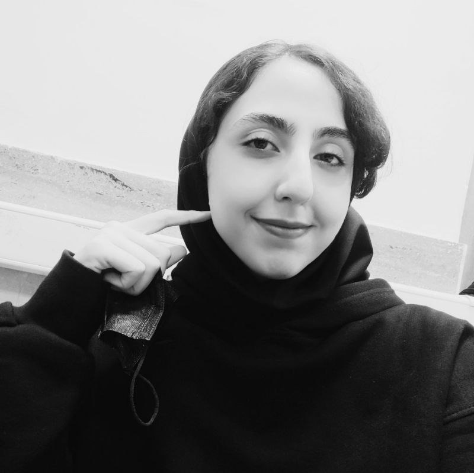
دانشجوی کارشناسیمهرو صفری (Mahroo Safari)
مهندسی کامپیوتر (Computer Engineering)
موضوع پروژه کارشناسی: بررسی، ارزیابی و بهبود کارآیی مدلهای زبانی بزرگ در ایمنی مصرف دارو
استاد راهنما: دکتر عبدالله چاله چاله
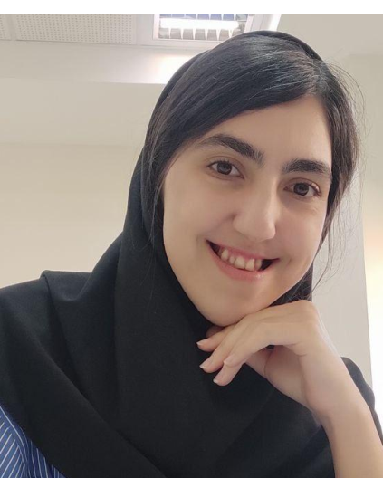
دانشجوی دکتریفائزه صفری (Faezeh Safari)
هوش مصنوعی (Artificial Intelligence)
موضوع رساله: Integrating Multimodal Large Language Models and Knowledge Graphs for Disease Understanding
استاد راهنما: دکتر عبدالله چاله چاله
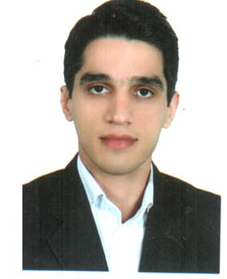
دانشجوی دکتریعارف عارفنیا (Aref Arefnia)
معماری سیستمهای کامپیوتری
موضوع رساله: Adaptive selection of participants in federated learning under data and system heterogeneity
استاد راهنما: دکتر عبدالله چاله چاله
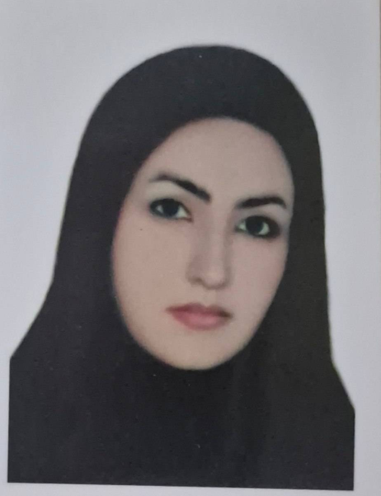
دانشجوی دکتریطاهره کرمی (Tahereh Karami)
مهندسی کامپیوتر
موضوع رساله: Deep Vision & Multi-Modal Foundation Architectures
استاد راهنما: دکتر عبدالله چاله چاله
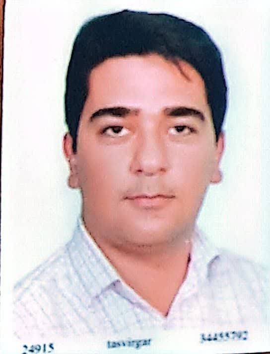
دانشجوی دکتریآیدین صادقی (Aydin Sadeghi)
معماری سیستمهای کامپیوتری
موضوع رساله: Fault-Tolerant Vision Systems & Deep Anomaly Detection
استاد راهنما: دکتر عبدالله چاله چاله
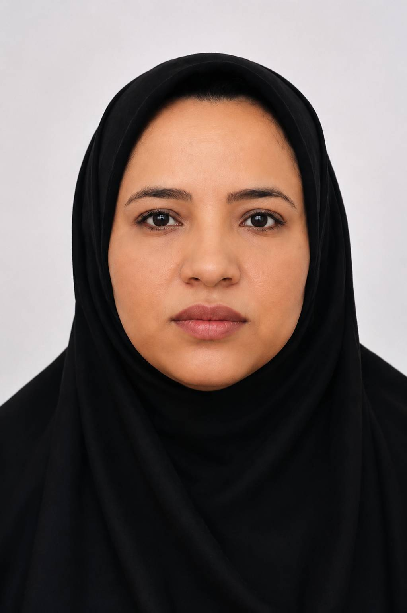
دانشجوی دکتریمژگان صالحی نسب (Mozhgan Salehi Nasab)
معماری سیستمهای کامپیوتری
موضوع رساله: Deep Representation Learning for Complex Scene Parsing
استاد راهنما: دکتر عبدالله چاله چاله
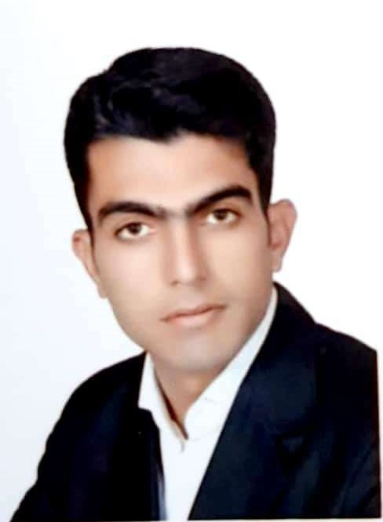
دانشجوی دکتریهادی رنجبرزاده (Hadi Ranjbarzadeh)
معماری سیستمهای کامپیوتری
موضوع رساله: High-Performance Neural Network Accelerators for Vision
استاد راهنما: دکتر عبدالله چاله چاله
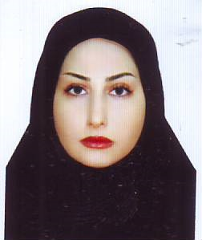
دانشجوی دکتریسمانه خسروی (Samaneh Khosravi)
معماری کامپیوتر
موضوع رساله: Neural network accelerators & approximate computational circuits
استاد راهنما: دکتر آرزو کامران
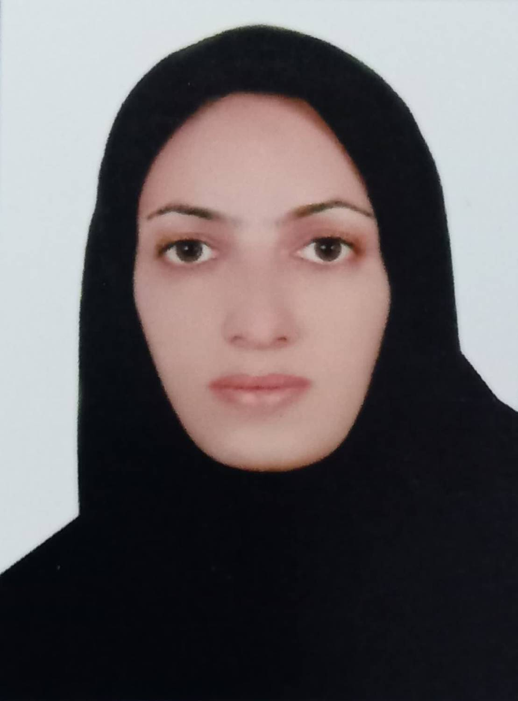
دانشجوی دکتریفاطمه ترکاشوند (Fatemeh Torkashvand)
معماری سیستمهای کامپیوتری
موضوع رساله: Classification and description of images related to skin lesions based on deep learning
استاد راهنما: دکتر عبدالله چاله چاله
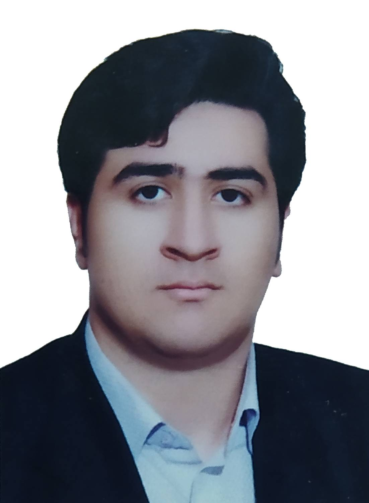
دانشجوی دکتریسعید برشانده (Saeid Barshandeh)
مهندسی کامپیوتر
موضوع رساله: Metaheuristic Global Optimization for Deep Neural Vision Models
استاد راهنما: دکتر عبدالله چاله چاله
دانشجوی ارشد
فاطمه خلوندی (Fatemeh Khalvandi)
مهندسی کامپیوتر
موضوع پایاننامه: Alzheimer's disease diagnosis using artificial intelligence & MRI techniques
استاد راهنما: دکتر عبدالله چاله چاله
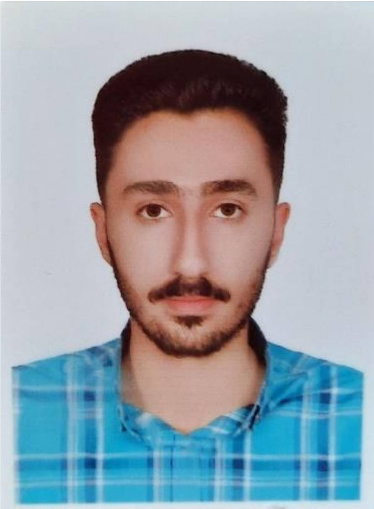
دانشجوی ارشدعلی حیدری (Ali Heidari)
مهندسی کامپیوتر
موضوع پایاننامه: Providing a solution for recognizing traffic signs using machine vision
استاد راهنما: دکتر عبدالله چاله چاله
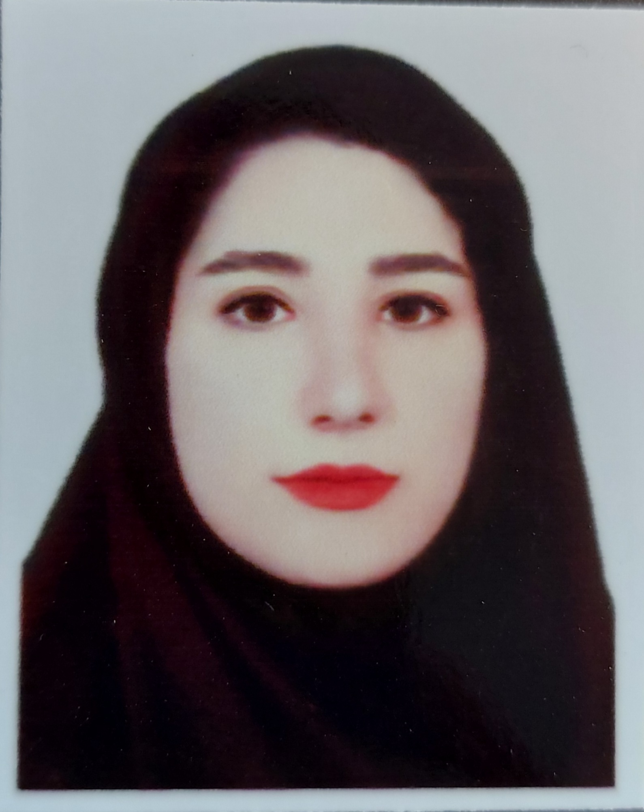
دانشجوی ارشدسارا خزلی (Sara Khezeli)
هوش مصنوعی
موضوع پایاننامه: Restoration of historical buildings and monuments using artificial intelligence & generative inpainting
استاد راهنما: دکتر عبدالله چاله چاله
 دانشجوی ارشد
دانشجوی ارشد
عاطفه دارابی قاسمی (Atefe Darabi)
سیستمهای چندرسانهای
موضوع پایاننامه: Sentiment analysis on text using Persian natural language processing and deep learning
استاد راهنما: دکتر عبدالله چاله چاله
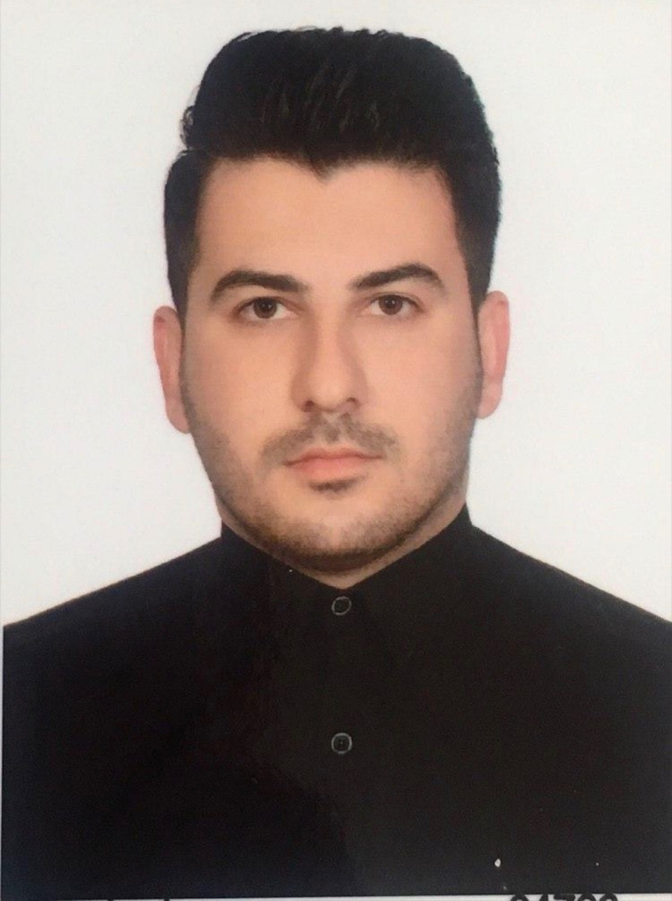
دانشجوی ارشدسبحان خانی (Sobhan Khani)
مهندسی کامپیوتر
موضوع پایاننامه: Multimodal Audio-Visual Feature Processing
استاد راهنما: دکتر عبدالله چاله چاله
 دانشجوی ارشد
دانشجوی ارشد
شیوا چراغی (Shiwa Cheraghi)
سیستمهای چندرسانهای
موضوع پایاننامه: Wood defect detection using image processing and deep learning techniques
استاد راهنما: دکتر عبدالله چاله چاله
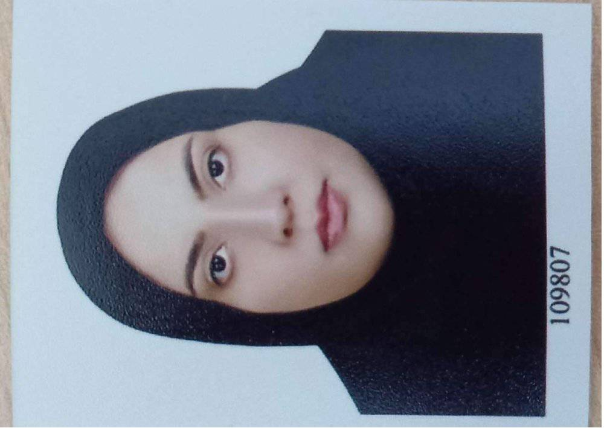
دانشجوی ارشدسمیرا کریمی (Samira Karimi)
هوش مصنوعی و رباتیک
موضوع پایاننامه: Automatic detection of driver distraction using machine vision and deep learning
استاد راهنما: دکتر عبدالله چاله چاله
 دانشجوی ارشد
دانشجوی ارشد
اکرم سلطانآبادی (Akram Soltanabadi)
سیستمهای چندرسانهای
موضوع پایاننامه: Differential diagnosis of lung diseases using deep learning-based methods
استاد راهنما: دکتر عبدالله چاله چاله
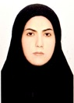
فارغالتحصیلرقیه مرادی (Roghayeh Moradi)
معماری سیستمهای کامپیوتری
موضوع پایاننامه: Segmented approximate collector with effective cutting and fast correction unit
استاد راهنما: دکتر آرزو کامران
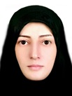
فارغالتحصیلطیبه کریمی (Tayyaba Karimi)
معماری سیستمهای کامپیوتری
موضوع پایاننامه: Design of an Approximate Adder Considering Energy and Delay for Deep Learning
استاد راهنما: دکتر آرزو کامران
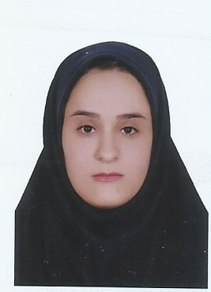
فارغالتحصیلزینب مرادی (Zainab Moradi)
معماری سیستمهای کامپیوتری
موضوع پایاننامه: Test generation for hybrid digital circuits using critical path tracing
استاد راهنما: دکتر آرزو کامران
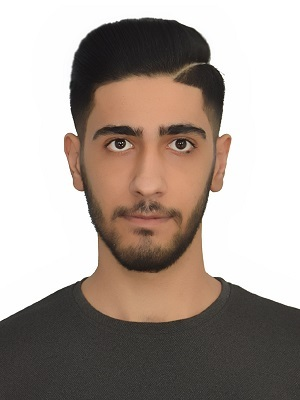
فارغالتحصیلمهدی یوسفی (Mehdi Yousefi)
معماری سیستمهای کامپیوتری
موضوع پایاننامه: Design and testing of digital edge and fog computing architectures
استاد راهنما: دکتر آرزو کامران